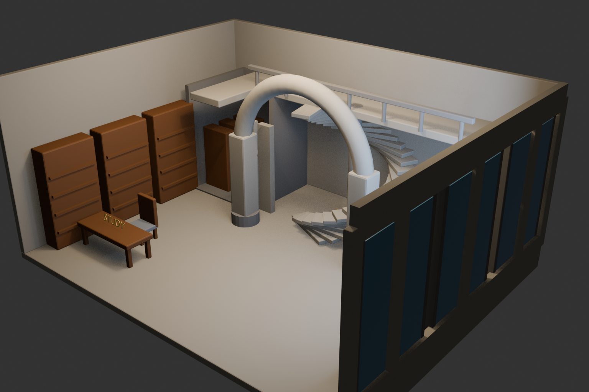
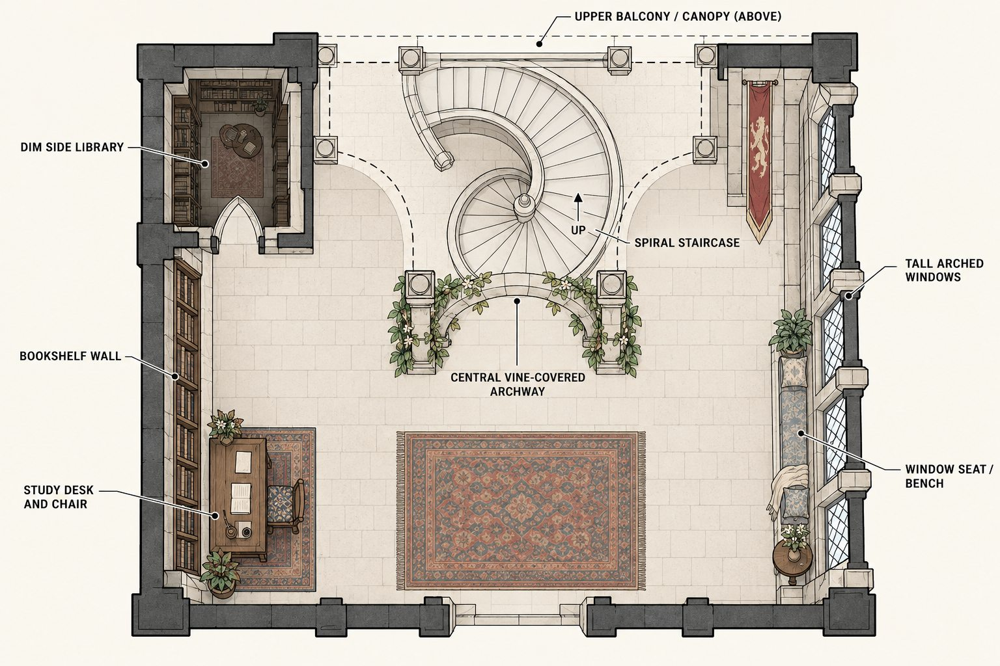
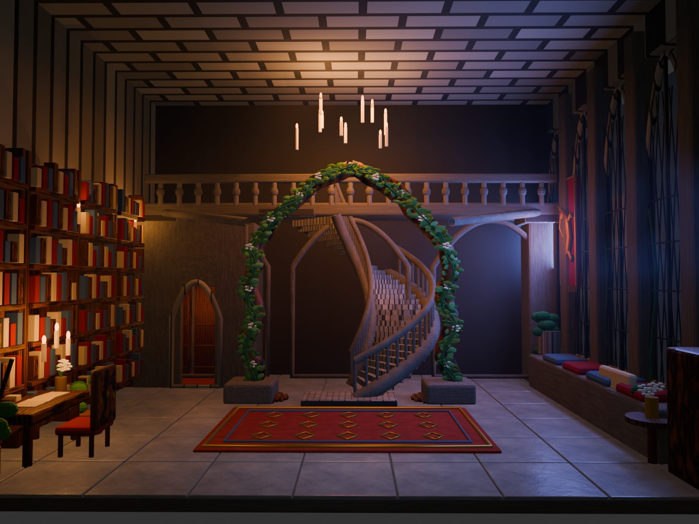

02 · 3D environment
The Greenhouse
Sanctuary
A magical place for living, reading, working, and resting.
Concept
A library that feels alive.
This fantasy interior combines a Gothic library with a glowing greenhouse. A living vine arch frames the central staircase, while books, warm candlelight, tall windows, stone, and plants create a calm but magical atmosphere.
The project began as a simple architectural blockout. I refined the study, library, stair, windows, materials, plants, and lighting until the space felt like a real environment someone could enter.
Warm, magical, inviting
Fantasy academies and Gothic libraries
Spatial storytelling and mood
Blender + AI-assisted visualization
Process
From blockout to atmosphere.



Final environment
Magic built from ordinary materials.
Stone, wood, books, plants, and candlelight are familiar on their own. Layered together, they turn the interior into a place that feels both believable and enchanted.